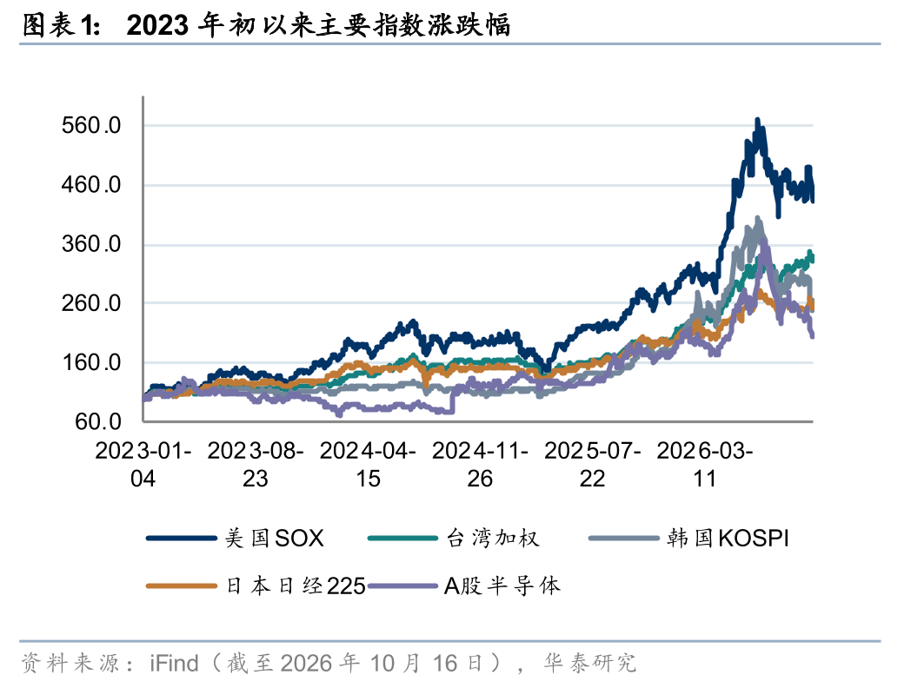
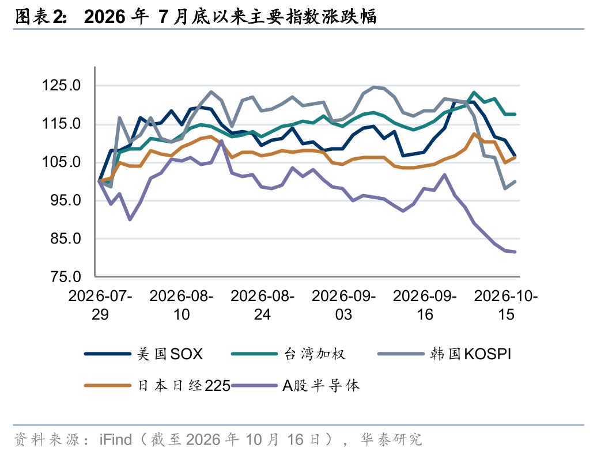
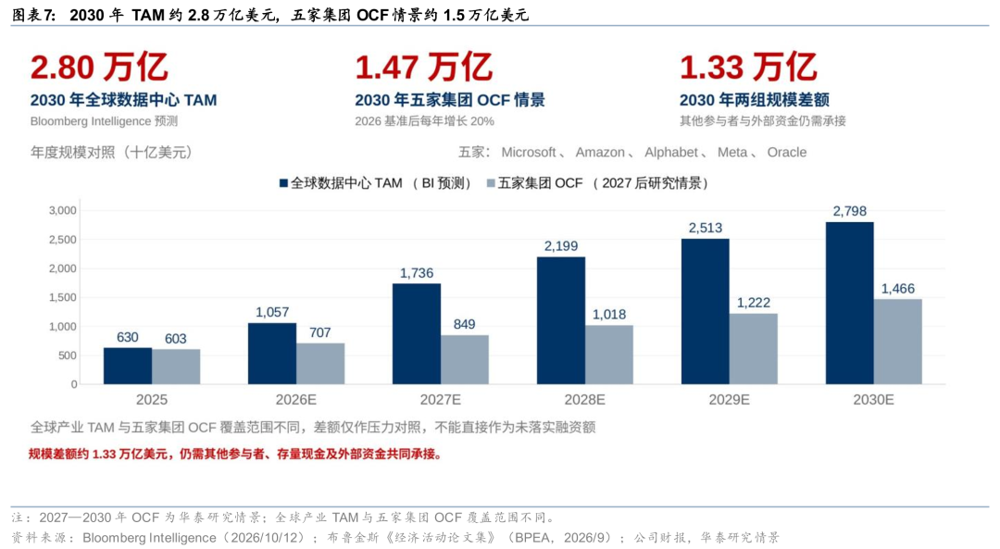
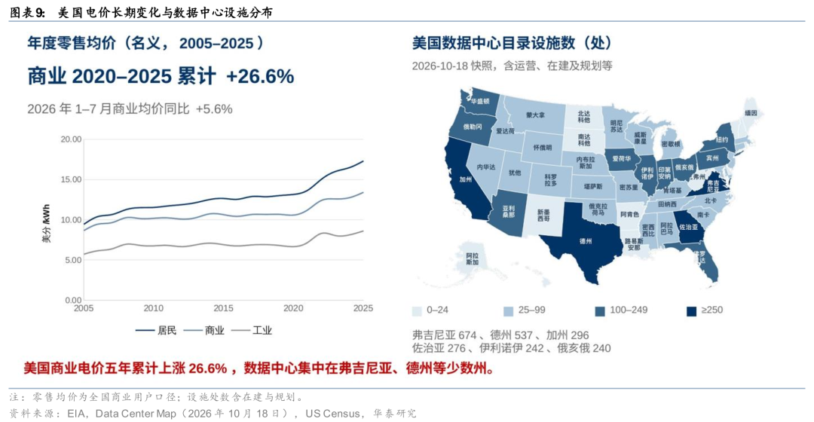
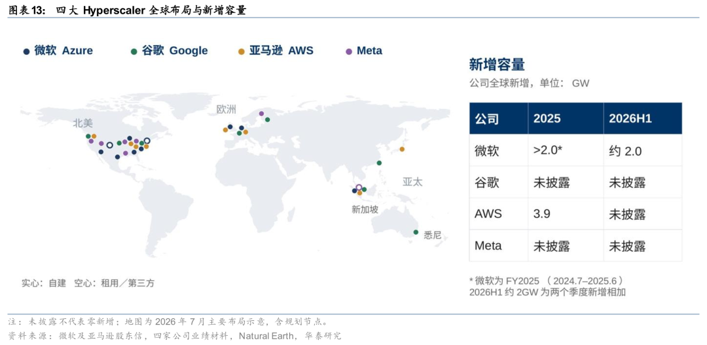
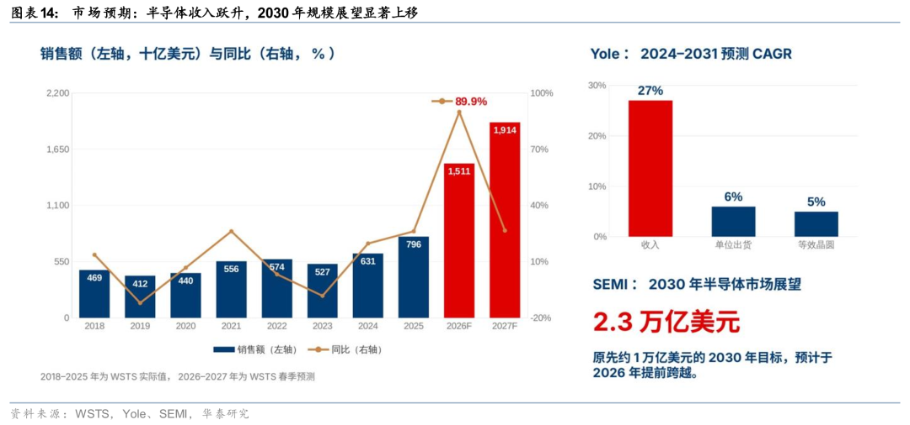
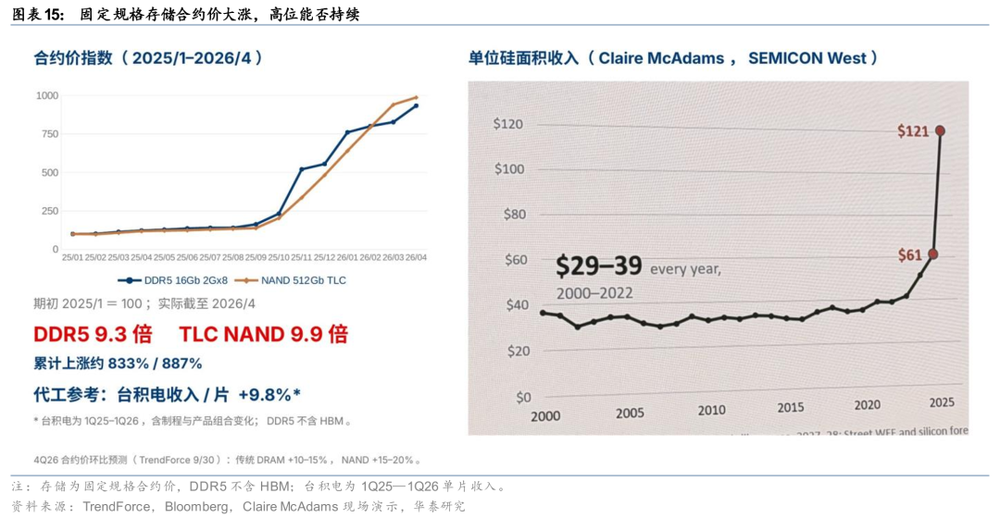
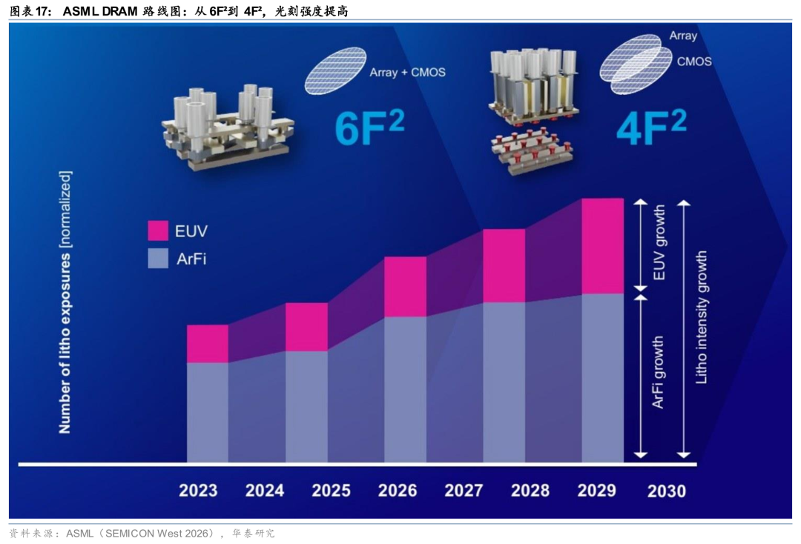
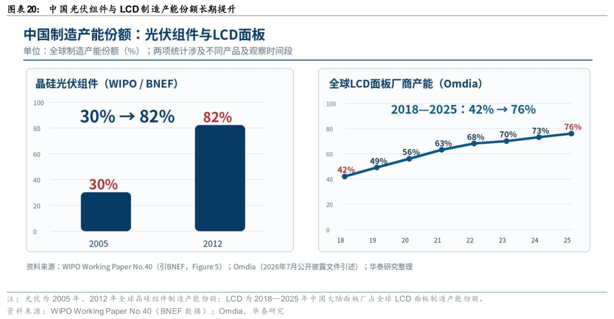
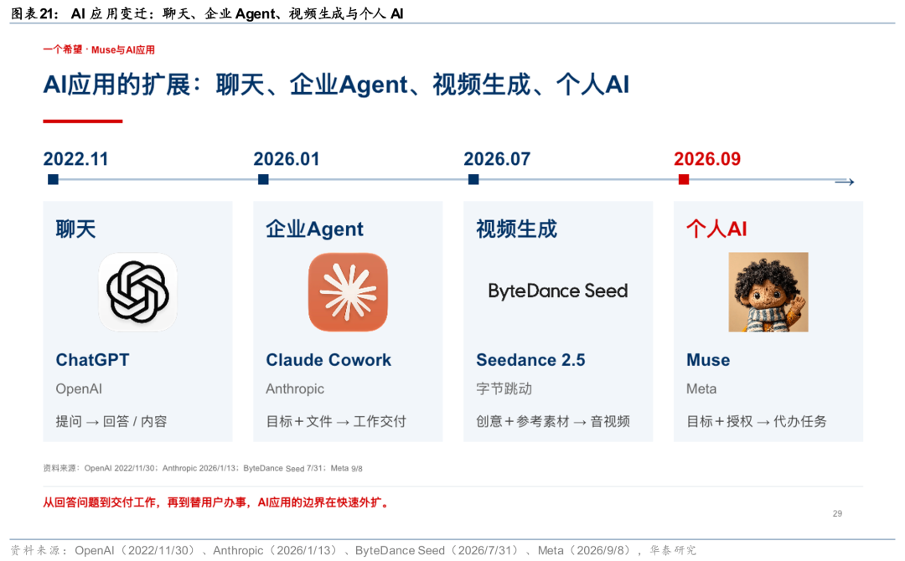

近期我们赴美参加OCP和SEMICON West，并与当地投资人深入交流。最大的感受是，AI发展主要矛盾已从2nm工艺、HBM存储等单纯技术问题，转向：1）如何筹集巨额建设资金的金融问题，以及2）如何在减少对周边居民影响的前提下、尽快落实供电配套的能源问题。同时，投资人对过去一年暴涨逾9倍的存储价格、以及2025-2028年有望翻倍增长的半导体设备市场普遍抱有“恐高”情绪；长鑫份额增长及推进4F²新架构，也引起投资人对竞争格局的关注。为数不多的亮点来自Meta推出的个人助理Agent Muse。在当前更看重业绩与现金流兑现的阶段，行业排序建议：M7（QQQ）＞半导体（SOX）；硬件板块内部：消费电子品牌＞ 设计＞ 代工 ＞ 存储 ＞ 设备。
主要矛盾1（资金）：如何筹集达1.3万亿美元的数据中心建设费用
根据Bloomberg Intelligence，2030年全球数据中心相关资本开支有望达到约2.8万亿美元，其中1.4万亿是GPU/ASIC等AI芯片，其它包括网络，存储，电源等板块。一致预期2026年微软/谷歌/Amazon/Meta/Oracle等经营现金流合计超7000亿美元，若假设在2026年基础上每年增长20%，2030年有望达1.5万亿美元，存在1.3万亿美元资金缺口。另一方面，全球最大Neocloud的CoreWeave发行的债券出现利率大幅上浮的信号，建议投资人深入了解CoreWeave的运营机制，预判美国AI产业链融资活动发展。
主要矛盾2（电力）：平衡社区影响与用电压力，落实电力配套
这次走访中，我们注意到数据中心建设及其引发的电价上涨，已成为美国中期选举中备受关注的议题。据 EIA，美国商业电价在 2020—2025 年间累计上涨了26.6%（其中2026年1-7月均价同比上涨约5.6%），在加州、德州及弗吉尼亚等数据中心密集布局的区域，居民与商业电费压力凸显。同时，地方政府的限制正从舆论争议走向实质性行政干预。例如，纽约州近期宣布对 50MW 以上的数据中心项目暂缓发放相关环保许可，全美已有16 个州相继提出了类似限制类的立法议案。建议投资人密切跟踪美国中期选举后各州政策演变，将其作为评估海外AI基础设施落地节奏的核心风向标。
主要矛盾3（周期）：价格上涨过快，高基数下的周期反噬风险
根据WSTS及Yole预测，2026年全球半导体销售额将达1.51万亿美元（同比+89.9%），但硅片出货量年化增速仅约5%。这意味着每平方英寸硅片对应的芯片收入将从2025年的61美元跃升至2026年的121美元，同比近乎翻倍，其中存储涨价是核心推手（贡献约80%的行业增量）。供给侧，我们预测2025-2028年全球前道设备（WFE）市场将实现翻倍以上增长（+108%），且ASML表示，即便大幅扩产，2027—2028年产能仍难完全满足需求。交流中我们看到，美国投资人普遍担忧在如此高基数下，后续产能释放将引发价格回落，并进一步反噬2028年以后的设备资本开支周期。
主要关注4（中国）：长鑫推进4F²研发，投资人关注存储竞争格局
10月10日，长鑫科技宣布，正推进4F²垂直沟道晶体管及混合键合架构研发，并计划于年底前推出新一代服务器DDR5 RDIMM产品。4F²架构能将存储单元面积较主流6F²缩减约三分之一、显著提升芯片密度，目前全球尚无商业化量产先例。叠加长鑫DRAM全球营收份额持续提升，若其能在新架构上率先突破，有望大幅缩短与三星等海外原厂的代际差距，引发了海外投资人对存储竞争格局变化的担忧。
正文
美国投资人在担心什么？美股半导体回到7月暴跌后低位，信用利差走阔
7月29日暴跌之后，各地市场的修复并不同步。10月12—16日纳指下跌4.5%，费城半导体指数连续八个交易日下跌；截至10月16日，纳指和SOX仅较7月29日收盘高6.9%和6.6%，韩国KOSPI基本回到当日水平，只有台湾加权指数仍高17.7%。
相比股市，债市对风险的定价更为直接。美国10年期国债收益率10月5日为5.31%，10月16日降至5.09%，无风险利率在回落；同期CoreWeave 2032年到期美元债指示YTM却由6月18日的9.48%升至10月15日的14.54%，据Axios，其五年期CDS在10月15日接近1,100bp。横向比较，CoreWeave 2030年债指示G-spread约872bp，而Alphabet参照券仅约42bp。我们认为，市场的关注点已从资本开支的扩张速度，转向算力资产回报、现金回收与再融资能力。




7月下旬的急跌之后，二级市场开始讨论高集中度AI持仓叠加潜在杠杆可能带来的流动性压力，并拿2021年的Archegos作对照。两者的事实基础不同：Situational Awareness向SEC披露的6月30日13F中，SNDK与美光合计占申报持仓55.6%。据Reuters 7月30日报道，公司将大部分公开股票组合售予Citadel，其中包含经纪商提供杠杆融资的部分；但是否触发追加保证金尚无明确证据，不能将其等同于Archegos违约平仓。两者相似之处主要在于交易机制——即高集中度敞口叠加杠杆，在市场回调中容易放大流动性冲击。

从Computex到OCP：技术方向逐步清晰，市场开始问回报
在OCP展馆里走一圈，我们与6月在Computex看到的对比，最直观的感受是技术关键词几乎没变，仍是计算、存储、互连、供电与冷却，目标都是每瓦有效产出；变的是成熟度和节奏。工程实物在加速落地，Arm自有的AGI CPU双节点服务器、SK海力士CMM-DDR5等CXL内存模块都已摆上展台；但部分更激进的技术，量产节奏反而在后移。这种“工程样机加速落地、但规模量产节奏后移”的反差，是本次展会与此前市场预期最大的不同。

计算侧的市场预期仍在上修。AMD对2030年服务器CPU潜在市场空间（TAM）的预测，由2025年11月分析师日约600亿美元，上调至2026年5月超过1,200亿美元、8月约2,200亿美元；Bloomberg Intelligence在本次SEMICON West把2030年GPU／ASIC加速器市场由约5,600亿美元上调至约1.4万亿美元。路线上，三大CSP都在自研Arm CPU，Arm也从IP/CSS延伸到自有芯片。存储方面，Computex时市场聚焦HBM与SOCAMM，本次OCP的讨论延伸到了系统内存：CXL内存模块、池化实验与KV Cache共享方案，思路是用共享内存柜为多个GPU机柜提供KV容量。
节奏后移主要出现在互连和供电。Computex时CPO是主线，但本次NVIDIA与Cisco于10月12日公布了USFP可插拔光模块新规格计划，Credo展示了ZeroFlap有源铜缆（AEC）；距离、密度、功耗与维护要求共同决定选型，这与我们在SEMICON Taiwan得到的“CPO与可插拔在3.2T世代前共存”的判断一致。供电架构正由服务器内电源、54V机柜集中供电走向800V独立电源边柜，台达在现场展示了800V电源柜；根据我们本次OCP与SEMICON West现场调研，原先市场期待2027年由Kyber推动的800V架构规模导入，节奏可能延至2027年下半年以后。
我们认为，这次技术方向的增量有限。英伟达早在2025年已披露CPO及800V路线图，单纯技术迭代对股价的边际推动已经减弱，投资人的关注点也从“技术能否实现”转向“谁来买单、何时回本”，这也是本次交流中买方最关心的四个核心问题。
主要矛盾1（资金）：如何筹集达1.3万亿美元的数据中心建设费
“钱从哪里来”的问题，可以先从总量上看。按Bloomberg Intelligence口径，2030年全球数据中心TAM约2.80万亿美元；若假设微软、Amazon、Alphabet、Meta、Oracle五家集团经营现金流在2026年基础上每年增长20%，2030年约1.47万亿美元。两者覆盖范围不同，差额只作压力对照，但约1.33万亿美元的规模差额，仍需其他参与者、存量现金及外部资金共同承接。

当期报表上的压力已经可见。2026年6月30日止单季，微软、Meta、Alphabet、Amazon合计经营现金流约1,717亿美元，现金购建PPE约1,651亿美元，比例约96%，其中Alphabet、Amazon已超过100%。账面订单并不少，微软商业RPO约6,780亿美元、Google Cloud backlog约5,140亿美元、AWS backlog约4,960亿美元、Oracle RPO约6,640亿美元；但合同从签订到交付、确认收入再到回款存在时滞，短期内难以转化为覆盖资本开支的经营现金流。

据WSJ，多家科技公司存在规模巨大的表外采购及未来租赁承诺，付款横跨多个会计年度；四家科技巨头的债务、租赁负债及未来承诺合计超过3万亿美元。产业链内部的交叉投资在一定程度上缓解了单个项目的融资压力，芯片厂商投资模型公司、模型公司采购云算力、云厂商再购买芯片，资金和订单在链条内循环；但从资金来源看，最终承担这轮投入的仍是CSP既有业务的现金流、外部债股投资者，以及企业和消费者的AI付费。
据Bloomberg 10月8日转述FT，OpenAI年化收入接近500亿美元；据Reuters 8月17日报道，Anthropic截至7月底年化收入超过650亿美元。融资端，OpenAI 3月31日披露承诺资本1,220亿美元，Anthropic 5月28日完成650亿美元H轮。采购端，据Reuters 9月29日援引保密申报材料，Anthropic未来十年AI基础设施计划不少于5,180亿美元，约80%不可取消或不论用量均须付款。这类take-or-pay条款锁定了供应商的远期收入，也把付款刚性压到了模型公司未来的收入增速上：一旦收入增长放缓，固定付款并不会同步下调。
CoreWeave的股债表现，是上述压力在资本市场上的集中反映。GPU采购、园区建设与客户起租之间存在时间差，融资成本上升直接抬高了项目的回报门槛。我们认为，市场分歧的焦点不在算力需求本身，而在于对高杠杆模式的信用风险重估；后续资产利用率、客户集中度、GPU残值及再融资成本，将直接决定Neocloud厂商的股东回报。
主要矛盾2（电力）：平衡社区影响与用电压力，落实电力配套
EIA 4月预计，美国数据中心用电量将由2025年的224TWh增至2030年的426TWh。需求在地理上高度集中：据Data Center Map目录，弗吉尼亚和德州分别收录674处和537处数据中心（含在建与规划），输配电、变电站和用水压力也随之集中在少数州。
按EIA年度零售均价，美国商业电价2020—2025年累计上涨26.6%，电费因此成为数据中心审批中最敏感的议题。

OCP现场，Andy Bechtolsheim以曼哈顿地图叠图展示了Meta在路易斯安那州Hyperion园区的规划建筑体量；项目一期规划2GW、远期5GW。这类园区能否按期投产，取决于大规模送电、变压器与线路配套和冷却验收，而不仅是土建进度；我们认为，跟踪重点应从规划GW转向实际接入容量、送电日期与客户起租。

电价上涨正沿着“居民电费—选民态度—州级政策”的路径传导。据彭博社，美国德州、弗吉尼亚州、俄亥俄州、佐治亚州、新墨西哥州及宾州等主要数据中心州面临中期选举政治格局变化，随着电价上涨及电网、水资源负担加重，地方反对数据中心扩建的声音升温；德州、宾州已提高项目建设要求，俄亥俄州候选人提出有条件暂停数据中心开发。选民层面的变化也有数据：据《经济学人》，2024年投票给特朗普、居住在数据中心2公里以内的选民中约17%现表示支持民主党，其他地区为6%（排除未决定及支持第三党者）。市场关注11月中期选举后，州及地方政府是否可能进一步收紧项目审批、税收优惠及电力成本分摊要求，影响数据中心建设进度。

州长和立法机构已开始出台实质性限制措施。纽约州EO62对≥50MW数据中心的部分州环保许可实施暂缓，直至整体环评最终报告完成；马萨诸塞州EO658要求>25MW项目满足州框架与社区协议后才可取得相关州许可；AEP Ohio费率规定100MW合同的最低计费需量为82.5MW，即以高额保底电费把大负荷的成本风险留给项目方。据NCSL统计，已有16个州提出暂停类议案。许可暂停影响开工时间，社区协议与保底电费则直接改变项目的经济性。

约束增多的同时，四大Hyperscaler的新增容量仍在扩张：微软FY2025新增容量超过2GW，2026年上半年约2GW；AWS 2025年新增3.9GW，谷歌与Meta未披露。布局以北美为主，欧洲与亚太（新加坡、悉尼等）同步推进。

主要矛盾3（周期）：价格上涨过快，高基数下的周期反噬风险
美国投资人担心“太贵”，是因为收入与出货量出现了明显背离。WSTS春季预测2026年全球半导体销售额约1.51万亿美元、同比+89.9%（2025年约7,960亿美元），存储贡献约80%的增量。长期展望也随之抬高：SEMI与McKinsey在本次论坛均把2030年全球半导体市场收入放在约2.3万亿美元，Yole需求视角约3.6万亿美元。拆开量价，Yole预计2024—2031年收入CAGR为27%，出货量只有6%、等效晶圆5%；McKinsey认为2025—2030年的增量约60%来自数量、40%来自ASP与产品组合。换言之，收入翻倍主要来自价格与产品结构，而非出货量翻倍。

存储是这轮涨价最集中的环节。据TrendForce，DDR5 16Gb固定规格合约价由2025年1月的3.75美元涨至2026年4月的35美元，为期初的9.3倍；512Gb TLC NAND晶圆报价由2.52美元涨至24.87美元，为9.9倍。TrendForce于9月30日预计，4Q26传统DRAM合约价环比仍有10%—15%的涨幅。放到更长的周期看，据Claire McAdams在SEMICON West的演示，每平方英寸硅片对应的芯片收入在2000—2022年大致为29—39美元，2025年约61美元，2026年预计约121美元。AI芯片与存储涨价抬高了行业收入中枢，投资人担忧这一价格能维持多久、新增产能何时释放。

“太快”则体现在设备扩产上。SEMI 7月14日预计2028年全部半导体设备销售额为2,295亿美元；10月12日展示的9月更新预测已将2028年全部设备规模上调至2,500亿美元以上，并预计2026—2028年前道WFE分别为1,500亿、1,900亿和2,200亿美元；华泰7月模型预计前道WFE由2025年的1,160亿美元增至2028年的2,414亿美元，累计+108%、CAGR约28%。设备厂商的需求能见度也在拉长：ASML表示2027—28年计划产出仍难满足需求，爱德万测试的客户需求预测期已延长至18个月。我们在SEMICON West现场旁听的Bulls & Bears论坛上，分歧集中在2029年以后。主持人Claire McAdams给出两种情景：乐观情景下2030年WFE约4,000亿美元，形成更高、可持续的基数；悲观情景下2029年约3,000亿美元见顶，随后产能过剩。要达到4,000亿美元，单片设备投入需年增20%，而历史约9%；按她的判断，工艺复杂度带来的设备需求能持续，涨价和短缺溢价则不能。

主要关注4（中国）：长鑫推进4F²研发，市场关注存储竞争格局
在与美国长线投资人的交流中，问得最细的是长鑫。问题的起点在DRAM架构的切换：ASML在本次SEMICON West展示的路线图显示，DRAM将由6F²走向4F²；同一最小特征尺寸下，4F²单元面积理论上较6F²减少约三分之一，阵列密度明显提升，量产仍取决于外围电路、良率与客户认证。

全球DRAM厂商均在加速推进先进制程与新型存储架构。三星、SK海力士已进入1c节点，美光以1γ为当前主力量产节点，三大厂商持续推进下一代工艺及4F²架构研发。长鑫存储9月20日公告第五代DRAM技术平台进入量产，10月提出4F²架构DDR5 RDIMM产品计划。我们认为，决定竞争格局的仍是量产良率、成本及稳定出货能力。

据长鑫招股书，其DRAM营收份额由2Q25的3.97%升至4Q25的7.67%，今年三星、SK海力士、美光的公司整体毛利率仍在上行。我们认为，景气上行期份额变化还没有体现在利润上，一旦价格回落，新增供给对定价权的影响会显现。

投资人的敏感，很大程度上来自光伏和LCD的经验：中国晶硅组件制造产能份额2005—2012年由30%升至82%，LCD面板厂全球制造产能份额2018—2025年由42%升至76%。DRAM的工艺门槛和客户认证更高，未必复制同样的路径，但核心问题相同：新增供给何时、以什么产品进入市场，届时成熟品类的全球价格和利润会受到多大影响。

一个希望：Muse——从回答问题到代办任务
硅谷买方一边质疑算力回报，一边把Meta的Muse视为少数的增量希望，原因在变现方式。过去的Chatbot主要消耗用户时间，变现依赖订阅或广告；Muse则是能介入交易闭环和中小企业工作流的Action Agent，在用户授权后完成检索、比价、日程协调，把下单等关键动作交给用户确认，并延伸至小企业的营销与经营工作流。按完成的任务收费，意味着ARPU可以与AI替用户创造的价值挂钩，而不再只是一个聊天工具的月费。


从早期数据看，据Social Media Today转引Sensor Tower，Muse发布后22天下载量超过500万；据The Information，周用户超过300万。收费采用免费入口加订阅升级，个人订阅月费为20美元与100美元两档（有限测试）。能否撑起这一ARPU水平，取决于付费人数、留存与续费率，公司尚未披露，是我们后续跟踪的重点。
本文来源：华泰睿思